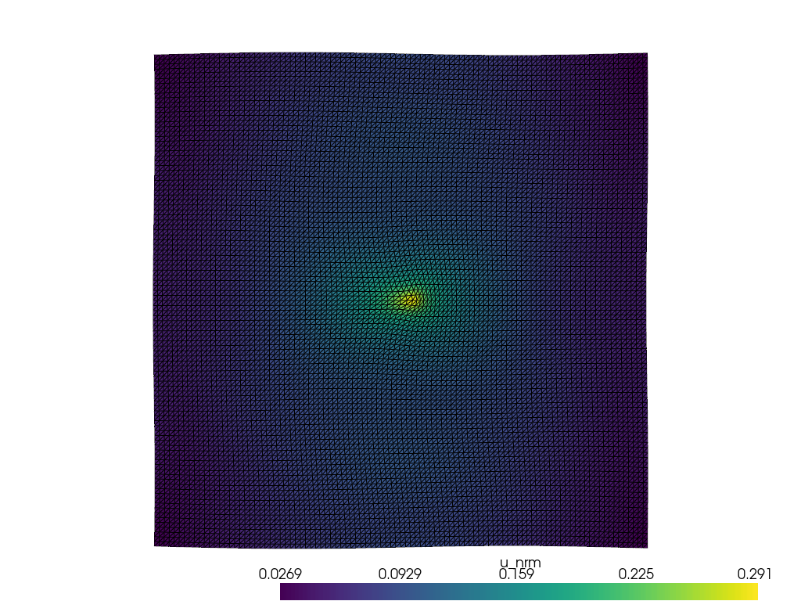
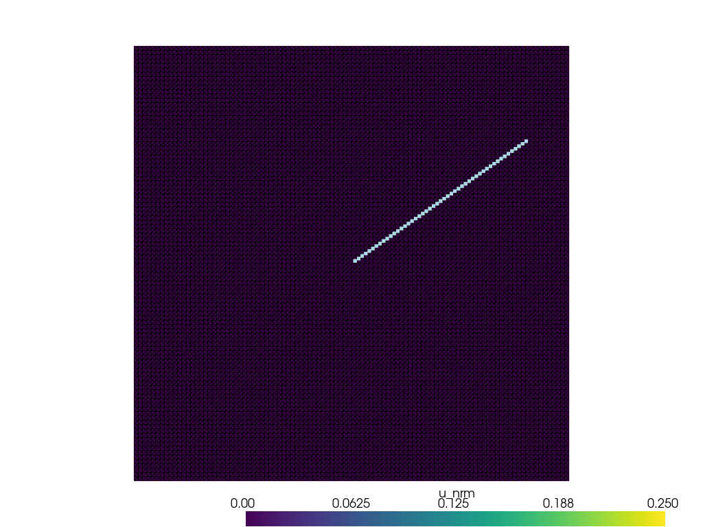
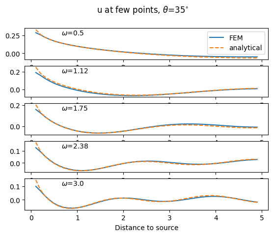

Harmonic P and SV elastic waves in an unbounded solid
Frequency-domain – Helmoltz equation
2D
Impedance absorbing boundary conditions
Comparison with an analytical solution
[1]:
import numpy as np
import matplotlib.pyplot as plt
from dolfinx import mesh, fem, default_scalar_type
import ufl
from mpi4py import MPI
from petsc4py import PETSc
from elastodynamicsx.pde import material, BodyForce, boundarycondition, PDE
from elastodynamicsx.solvers import FrequencyDomainSolver
from elastodynamicsx.plot import plotter, live_plotter
from elastodynamicsx.utils import make_facet_tags, make_cell_tags, ParallelEvaluator
from analyticalsolutions import u_2D_PSV_xw, int_Fraunhofer_2D
assert np.issubdtype(default_scalar_type, np.complexfloating), \
"Demo should only be executed with DOLFINx complex mode"
FE domain
[2]:
degElement = 1
length, height = 10, 10
Nx, Ny = 100//degElement, 100//degElement
# create the mesh
extent = [[0., 0.], [length, height]]
domain = mesh.create_rectangle(MPI.COMM_WORLD, extent, [Nx, Ny], mesh.CellType.triangle)
# create the function space
V = fem.FunctionSpace(domain, ("Lagrange", degElement, (domain.geometry.dim,)))
tag_left, tag_top, tag_right, tag_bottom = 1, 2, 3, 4
all_tags = (tag_left, tag_top, tag_right, tag_bottom)
boundaries = [(tag_left , lambda x: np.isclose(x[0], 0 )),\
(tag_right , lambda x: np.isclose(x[0], length)),\
(tag_bottom, lambda x: np.isclose(x[1], 0 )),\
(tag_top , lambda x: np.isclose(x[1], height))]
# define some tags
facet_tags = make_facet_tags(domain, boundaries)
Define the material law
isotropic elasticity
[3]:
# parameters here...
rho = fem.Constant(domain, default_scalar_type(1))
mu = fem.Constant(domain, default_scalar_type(1))
lambda_ = fem.Constant(domain, default_scalar_type(2))
# ... end
mat = material(V, 'isotropic', rho, lambda_, mu)
Boundary conditions
Plane-wave absorbing boundary conditions (‘Dashpot’)
\(\sigma(u).n = \mathrm{i}\omega Z_N u_N + \mathrm{i}\omega Z_T u_T\) where \(Z_{N,T}=\rho c_{L,T}\) is the normal/tangential acoustic impedance of the medium
[4]:
Z_N, Z_T = mat.Z_N, mat.Z_T # P and S mechanical impedances
bc = boundarycondition((V, facet_tags, all_tags), 'Dashpot', Z_N, Z_T)
bcs = [bc]
Source term (body force)
Gaussian source
[5]:
F0 = fem.Constant(domain, default_scalar_type([1, 0])) # amplitude
R0 = 0.1 # radius
X0 = np.array([length/2, height/2, 0]) # center
x = ufl.SpatialCoordinate(domain)
gaussianBF = F0 * ufl.exp(-((x[0]-X0[0])**2+(x[1]-X0[1])**2)/2/R0**2) / (2*np.pi*R0**2)
bf = BodyForce(V, gaussianBF)
Assemble the PDE
[6]:
pde = PDE(V, materials=[mat], bodyforces=[bf], bcs=bcs)
Solve
Initialize the solver
Ex. 1: Solve for a single frequency
Ex. 2: Solve for several frequencies
[7]:
# Initialize the solver
M, C, K = pde.M(), pde.C(), pde.K() # Mass, damping and stiffness matrices (PETSc.Mat)
b = pde.init_b() # declare the right-hand term (PETSc.Vec)
b_update_function = pde.update_b_frequencydomain # will be called at each frequency by the solver
fdsolver = FrequencyDomainSolver(V.mesh.comm, M, C, K, b, b_update_function=b_update_function)
[8]:
# -----------------------------------------------------
# Ex 1: Solve for a single frequency
# -----------------------------------------------------
# Frequency to solve for
omega = 1.0
# Declare solution
u_res = fem.Function(V, name='solution')
# Solve
fdsolver.solve(omega=omega, out=u_res.vector)
# Plot
if domain.comm.rank == 0:
p = plotter(u_res, complex='real')
p.show()
# ------------------ end of Ex 1 ----------------------

[9]:
# -----------------------------------------------------
# Ex 2: Solve for several frequencies
# -----------------------------------------------------
# Frequencies to solve for
omegas = np.linspace(0.5, 3, num=5)
# Declare solution
u_res = fem.Function(V, name='solution')
# Prepare post processing
# -> Extract field at few points
from scipy.spatial.transform import Rotation as R
theta = np.radians(35)
pts = np.linspace(0, length / 2, endpoint=False)[1:]
points_out = X0[:,np.newaxis] + R.from_rotvec([0, 0, theta]).as_matrix() @ np.array([pts,
np.zeros_like(pts),
np.zeros_like(pts)])
# Declare a convenience ParallelEvaluator
paraEval = ParallelEvaluator(domain, points_out)
# Declare data (local)
u_at_pts_local = np.zeros((paraEval.nb_points_local,
V.num_sub_spaces,
omegas.size),
dtype=default_scalar_type) # <- output stored here
# Callback function: post process solution
def cbck_storeAtPoints(i, out):
if paraEval.nb_points_local > 0:
u_at_pts_local[:,:,i] = u_res.eval(paraEval.points_local, paraEval.cells_local)
# Live plotting
enable_plot = True
if domain.comm.rank == 0 and enable_plot:
p = live_plotter(u_res, clim=0.25 * np.linalg.norm(mu.value * F0.value) * np.array([0, 1]))
if paraEval.nb_points_local > 0:
p.add_points(paraEval.points_local) # add points to live_plotter
else:
p = None
# Solve
fdsolver.solve(omega=omegas, out=u_res.vector, callbacks=[cbck_storeAtPoints], live_plotter=p)

[9]:
<petsc4py.PETSc.Vec at 0x7fdca80be930>
Post-processing
Plot the field at selected points
Compare with an analytical solution
[10]:
# Gather the data to the root process
u_at_pts = paraEval.gather(u_at_pts_local, root=0)
if domain.comm.rank == 0:
### -> Exact solution, At few points
x = points_out.T
# account for the size of the source in the analytical formula
fn_kdomain_finite_size = int_Fraunhofer_2D['gaussian'](R0)
u_at_pts_anal = u_2D_PSV_xw(x-X0[np.newaxis,:], omegas, F0.value, rho.value,
lambda_.value, mu.value, fn_kdomain_finite_size)
#
fn = np.real
icomp = 0
fig, ax = plt.subplots(len(omegas),1)
fig.suptitle(r'u at few points, $\theta$=' + str(int(round(np.degrees(theta), 0))) + r'$^{\circ}$')
r = np.linalg.norm(x - X0[np.newaxis,:], axis=1)
for i in range(len(omegas)):
ax[i].text(0.15, 0.95, r'$\omega$=' + str(round(omegas[i], 2)),
ha='left', va='top', transform=ax[i].transAxes)
ax[i].plot(r, fn(u_at_pts[:, icomp, i]), ls='-' , label='FEM')
ax[i].plot(r, fn(u_at_pts_anal[:, icomp, i]), ls='--', label='analytical')
ax[0].legend()
ax[-1].set_xlabel('Distance to source')
plt.show()
#
# ------------------ end of Ex 2 ----------------------
